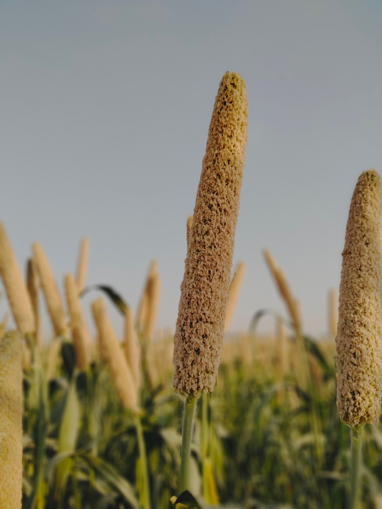

Pearl Millet (Pennisetum glaucum)
First Cultivated: ~4500 BCE
Optimal Climate: Hot, arid to semi-arid
Water Requirement: 8 to 14 inches annually
Pearl millet is among the most heat- and drought-tolerant cereals grown in Africa. Domesticated in the western Sahel, it sustains communities where rainfall is scarce and irregular. Flatbreads, porridges, and fermented drinks made from millet remain everyday staples from Senegal to Sudan.